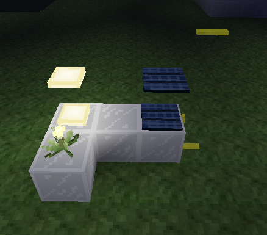
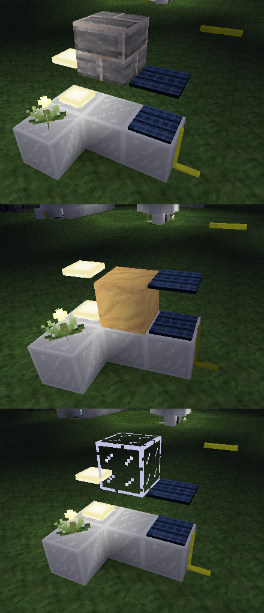
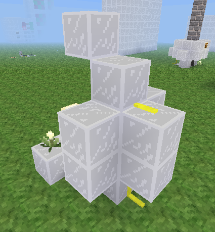
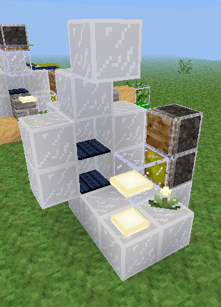
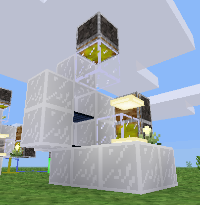
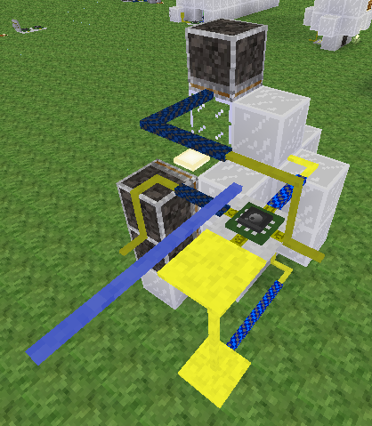
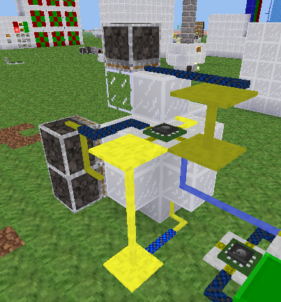

Mesecons Laboratory
Adventures in digital circuitry.
Node Detector
24/3/13 - Uberi
Difficulty level:


 (3/10)
(3/10)
This article assumes you have the Digilines mod, which I generally consider a de facto part of Mesecons. It is still possible to complete it without this mod, but replacing its functionality with fancy wiring is an exercise left to the reader.
Have you ever woken up just feeling like you want to abuse some game mechanics? No? Well, how about detecting different types of nodes?

How did it know the node was sand? Same way it does it below:

This machine takes a node, subjects it to some tests, and tells you which one of three different types of nodes it is! What's more, it cleans and resets itself, so all you have to do is add input to the top!
A mesecons computer might encode programs as a pattern in a long line of nodes, but how does it read it? You can pass the line around with pistons, but to actually convert them into signals, you need a node detector.
Step 1: Design
What should a node detector detect? Well, this one can check for a few things:
- Whether a node is transparent, like glass.
- Whether the node falls when unsupported, like sand.
- Whether the node is neither tranparent nor falls when unsupported, like cobble
With only two checks, transparency and falling, we can classify a given node into four categories. However, since no node belongs to one of the categories, namely transparent and falling, we effectively have three. This lets us tell the difference between cobble, sand, and glass.
How do we check if a node is transparent? Well, a transparent node does not block light, so we can put a light on one side of the node, and check the light level on the other side. If the node blocks the light, the detected light level will be lower, and we know the node is solid. Otherwise, the detected light level is higher and we know the node is transparent.
We can check for light levels using solar panels. Solar panels usually only respond to very bright light: direct sunlight, directly beside a torch, or one node away from a lamp:

As you can see, when a solid node is blocking the way, the solar panel is off. In contrast, the transparent node allows light through and the solar panel is on.
Step 2: Layout
A very compact way of stacking two testers on top of each other is shown below:
Note that the mesecon wires on the right must be placed the way they are to prevent them from interfering with each other. The reason we use uninsulated mesecons will become clear in a moment.
Let's see what happens when we put different nodes in it:
Each case gives a different pattern in the output of the solar panels: the solid has the top panel on and bottom off, the falling has the top off and bottom on, and the transparent has both on.
Did you notice something about all these pictures? They were all taken at night! That's because during the day, sunlight hits the panel and it stays on rather than being blocked by our nodes. We can remedy that situation by building a dark enclosure for it to block the sunlight:
The above is the minimum coverage necessary to make sure both testers still work properly. Note that the uninsulated mesecon wire is receiving the signal through the corner of the enclosure, while the enclosure is still blocking light effectively.
Step 2: Construction
Now we have a basic detector capable of detecting any node you put on the top space. But that's not very useful - the detector clogs up after just one use and you have to manually reset it. Let's add some pistons to do that for us:
When the node to be scanned is placed in front of the top piston, and both pistons fire, the previous node being scanned will be pushed out of the other side of the scanner. At the same time, the current node is pushed into the scanner, and can be properly scanned when the pistons retract. The bottom piston is a sticky piston with a block, and acts like a non-sticky piston. We use that because the power plant would keep a non-sticky piston powered all the time, while the sticky one can be placed one node behind and stays unpowered.
However, after trying it a few times, the stuff being pushed out of the scanner seems like garbage. The bottom row will all be the falling nodes, and the top row will be all the non-falling nodes. To remedy this, we'll add another piston, pointing down. It's the same sticky piston with block trick, since the solar panel would otherwise power the piston all the time:
When we're done scanning, this piston will fire, and the node will be on the bottom level, regardless of whether it falls or not. That means when we scan multiple nodes, they will always come out in the same order they were put in.
Step 3: Control
So far you've probably been scanning these nodes by firing those pistons manually. Well, that's not very useful, is it? We can probably tell what kind of node it is by ourselves. But this device becomes a lot more useful when automated. Let's begin with my favourite tool for that, the Luacontroller:
Here I've wired the Luacontroller ports to the two sets of pistons, as well as the outputs of the two solar panels. In order to be able to send a signal that starts the scanning process, I've also attached a digiline to send these signals on and receive scan results from.
You'll notice that port C is facing the pistons, and port D is facing the solar panels. If you built it in a different orientation, simply replace the port names with their rotated equivalents. For example, port.b would become port.c in the code if you built the machine 90 degrees clockwise from the orientation used here.
Now to program it. We want to send a signal on the digiline, and have the Luacontroller do a number of things:
- Fire the two pistons that clear the machine and push in the new node to be scanned.
- Wait for a bit, then check on the values output by the solar panel - the result of the scan.
- Fire the top piston to push all the nodes down to the lower level.
Realized in code, that looks something like this:
if event.type == "digiline" and event.channel == "probe" then
port.c = true
interrupt(0.3, "pull1")
elseif event.iid == "pull1" then
port.c = false
interrupt(1, "test")
elseif event.iid == "test" then
if not pin.d then
digiline_send("type", 1)
elseif not pin.b then
digiline_send("type", 2)
else
digiline_send("type", 3)
end
interrupt(0.3, "push2")
elseif event.iid == "push2" then
port.a = true
interrupt(0.3, "pull2")
elseif event.iid == "pull2" then
port.a = false
end
It starts scanning upon receiving a digiline signal on the channel "probe", and send the result back on the channel "type", as a number between 1 and 3. Each number represents a type of node: 1 represents solid, 2 represents falling, and 3 represents transparent.
Step 4: Improvements
A node detector isn't very useful by itself - it's meant to be used as a part of other machines that need to look at nodes and see what they are. As a component of a bigger machine, it's even more important that it be as compact and efficient as possible. Let's have a try at that. With fancy wiring and moving things closer together, the result is a nice and compact 5 by 4 by 5 box, not including the display that shows what type of node was detected:
Now go build something that uses one! Bonus points if it involves the words "3D" and "scanner".
Downloads
All files are available under the same license as this article. The WE schematics can be loaded using the //load command in WorldEdit.
Node detector in WorldEdit format (WE)

This work is licensed under a Creative Commons Attribution-ShareAlike 3.0 Unported License.
Need to contact me? Do so at my website!